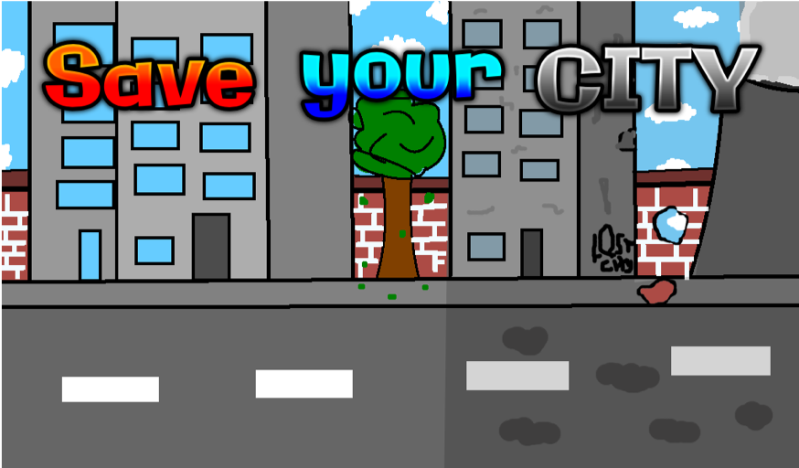

Unser Game
Die Message
Wir versuchen mit dem Spiel, ein paar Messages an die Menschen zu senden, auch wenn diese politisch nicht immer korrekt sein mag. hier ist eine von vielen:
Mach diese Welt zu einer besseren. Rette deine Stadt Rette die Zukunft von dir und deinen Kindern, damit auch in ein paar Millionen Jahren jeder sein Stück der Schönheit Erde abhaben kann.
Kurz gefasst: Schütze deine Heimat und das, was dir lieb ist!!!
Da der Klimawandel sich momentan in kritische bereiche rutscht, wollen wir den Menschen auf einfache Art und Weise nahe bringen,
wie wichtig das Klima und wie fatal die Auswirkung des modernen Menschen darauf ist.
Das Grundprinzip
Zwei Spieler kämpfen gegeneinander, indem sie die andere Stadt mit co2 verpesten, mit Giftmüll vollpumpen oder aber Trump-paraden organisieren, die in der Gegnerstadt verhindern sollen, das das Klima verbessert wird. Jeder der Kontrahenden baut sich sachen, die zerstört werden können, wie z.B. Häuser. Diese verbrauchen wiederum Strom, der den Klimawandel beschleunigt, jedoch bringen Häuser Lebensqualität. Jedes Objekt hat also seine vor-und Nachteile.
Die Hauptmission ist es, durch z.B. Windkraftwerke oder Bäume die Umwelt zu verbessern und die Temperatur zu senken, was wiederum die Lebensqalität erhöht USW.

Das Main Menu
designed by Designabteilung